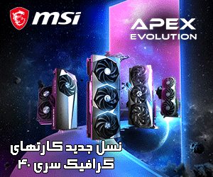
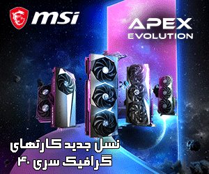

با چند مورد از بهترین فیلم های علمی تخیلی تاریخ آشنا شوید؛ از آثار بسیار مشهور تا فیلمهایی که اسم آنها را هم شاید نشنیده باشید.
A1-MCI فیلم های علمی تخیلی از همان ابتدای تاریخ سینما مورد توجه بودهاند. از فیلم سفر به ماه محصول ۱۹۰۲ ساخته ژرژ ملی یس، به نوعی فیلمهای این ژانر کلید خوردند و رفته رفته در دهههای ۱۹۶۰ و ۱۹۷۰، در بحران جنگ سرد، به شکوفایی خود رسیدند. اگرچه داستانهای علمی و تخیلی اغلب اوقات در آینده رخ میدهند، اما در اصل در کشف کردن فضای پیرامونمان و راز و رمزهای نهفته در آن به ما کمک میکنند؛ کشف کردن اینکه چگونه ما امروزه به واسطه فناوری و داستانها زندگی میکنیم. حتی آثار بسیار جذابی هم وجود دارند که داستان آنها در فضا رخ میدهند یا اینکه حول محور رباتهای غول پیکر یا هیولاهای مختلف میچرخند اما در استعارههایی که به کار میبرند، با زمانه معاصر خود ارتباط برقرار میکنند. ما در این مقاله تصمیم گرفتیم که با درنظرگرفتن فاکتورهای مختلف، چند مورد از بهترین فیلم های علمی تخیلی تاریخ را استخراج کنیم.
در یک برههای از زمان، در گذشتههای دور، کسی یا چیزی با قرار دادن یکپارچگی خاصی روی زمین، به رخ دادن تکامل کمک کرد؛ احتمالا در نقطه دیگری از جهان هم این کار را انجام داده بود. سپس تکامل، انسان را قادر ساخت تا روی سطح ماه قدم بگذارد؛ جایی که یکپارچگی دیگری پیدا شد. این یکپارچگی نشانگر این بود که نژاد بشر تا چه اندازه پیشرفت کرده است. حالا نژاد بشر با کمک هوش مصنوعی (مانند HAL) باید جرأت این را پیدا کند که با یکپارچهسازها برخورد و مقابله کند. اگر موفق شود، در گام بعدی میتواند به تکامل بیشتری دست پیدا کند؛ حالا این گام بعدی، هرچه که میخواهد، باشد. این فیلم که در زمان خودش نقدهای متنوع در طیف گستردهای را دریافت کرد، تا به امروز هنوز هم یکی از بزرگترین و تاثیرگذارترین فیلمهای تاریخ به شمار میرود.
در یک کشور کوچک و بدون نام، منطقهای به نام زون وجود دارد. این منطقه، یک جای غیرمعمول است و داخل آن مکانی وجود دارد که با نام رووم یا اتاق شناخته میشود. اعتقاد بر این است که در این اتاق، آرزوها برآورده میشود. دولت منطقهی زون را ممنوعه اعلام کرد و ورودیها را بست. اما این ممنوعیت باعث نشد که مردم وارد زون نشوند. یک نویسنده و یک پروفسور تلاش کردند تا به زون وارد شوند. راهنمای آنها مردی به نام استاکر بود که ارتباط خاصی با زون داشت. بوریس و آرکادی استروگاتسکی داستان این فیلم را براساس رمانی به نام Roadside Picnic نوشتند که در سال ۱۹۷۲، خودشان آن را منتشر کرده بودند. این فیلم در ابتدا نظرات مختلفی گرفت اما به مرور زمان بهعنوان کلاسیکی از دنیای سینما شناخته شد.
حتمالا ماتریکس یکی از آن آثاری است که مطمئن بودید در فهرست بهترین فیلم های علمی تخیلی تاریخ، قرار خواهد گرفت. این فیلم یک آینده دستوپیایی را به تصویر میکشد که در آن بشریت ندانسته در داخل یک ماتریکس به دام افتاده است؛ یک واقعیت شبیهسازی شده که ماشینهای هوشمند آن را برای منحرف کردن حواس انسانها خلق کردند. درست در همین حین که انسانها در این ماتریکس هستند، این ماشینها از بدنشان بهعنوان منبع انرژی استفاده میکنند. زمانیکه یک برنامهنویس کامپیوتر به نام توماس اندرسون با نام مستعار هکری «نئو» حقیقت را فاش میکند، همراهبا سایر افرادی که از ماتریکس آزاد شدند، به شورش علیه ماشینها میپیوندند. واچوفسکیها برای ساخت این اثر از انیمیشنهای ژاپنی و فیلمهای رزمی الهام گرفته بودند.
این فیلم هم مثل چندین مورد دیگر این فهرست، در یک آینده دیستوپیایی از شهر لس آنجلس در سال ۲۰۱۹ جریان دارد. در این برهه زمانی، انسانهای مصنوعی که با نام رپلیکنتها شناخته میشوند، توسط شرکت بسیار قدرتمندی به نام تایرل بهصورت ژنتیکی بهگونهای مهندسی شدند که روی مستعمرات فضایی کار کنند. زمانیکه یک گروه فراری از رپلیکنتهای پیشرفته به رهبری روی باتی به سوی زمین فرار میکنند، پلیسی به نام ریک دکارد با اکراه قبول میکند که آنها را شکار و دستگیر کند. زمانیکه بلید رانر به نمایش درآمد، با نظرات مختلفی از منتقدان روبهرو شد و موفقیت آنچنان زیادی هم در باکس آفیس نداشت. اما خیلی زود لقب کالت را گرفت و از آن زمان بهعنوان یکی از بهترین فیلم های فیلم های علمی تخیلی تاریخ به شمار میرود.
ریدلی اسکات با ساخت فیلم بیگانه کاری کرد که یک غول به وجود آمد؛ غولی که نهتنها در دنیای سینمایی و هالیوود، بلکه در رسانههای دیگر مانند بازیهای ویدیویی، کتابهای کمیک، آثار تلویزیونی و غیره، هم حضور پررنگی دارد. ما در این مورد از بهترین فیلم های علمی تخیلی تاریخ، داستان یک کشتی فضایی تجاری و البته خدمه آن را دنبال میکنیم. این افراد بعد از اینکه یک پیام ناشناخته را دریافت میکنند که بهنوعی درخواست کمک دارد، سعی میکنند که خود را به آنجا برسانند. اما خب درست مانند تمام آثار ترسناک، ناگهان همه چیز به هم میپیچد و اتفاقاتی رخ میدهد که هیچکس توقع آن را ندارد. به محض اینکه آنها به محل مورد نظرشان میرسند، یکی از اعضای خدمه توسط یک موجود مورموز مورد حمله قرار میگیرد. طولی نمیکشد که دیگر اعضای این کشتی متوجه میشوند که این حمله تازه اول ماجرا است.

 
